BRIDGE MEDIA: Project Restored
Фанатский проект по восстановлению музыкальных каналов и истории холдинга BRIDGE MEDIA.

BRIDGE TV
Зарубежная популярная музыка всех времён и направлений. Сейчас в эфире.
Перейти на сайт Скоро
RUSONG TV
Лучшая российская и советская музыка всех жанров. Скоро в эфире.
Перейти на сайт АрхивBRIDGE MEDIA
Архив холдинга
DANGE TV, TOPSONG TV, BRIDGEBERG, BRIDGE PRODUCTION и BRIDGE DIGITAL.
Открыть архив